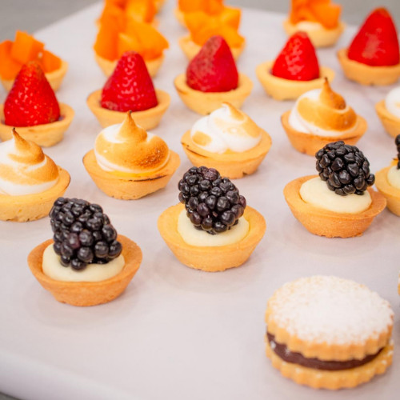

El broche de oro para una comida inolvidable
Y ahora sí, llegamos al final con un toque dulce que cierra la experiencia como se debe, canapés dulces. Pequeños bocados llenos de sabor, delicados pero intensos. Porque toda buena comida merece un final a la altura, y estos canapés son el broche de oro perfecto. Así que respirá hondo, sonreí y disfrutá este último paso: simple, elegante y delicioso.

Ingredientes
Masa sablèe
- Harina 0000, 300 g.
- Manteca 200 g.
- Azúcar impalpable 100 g.
- Yemas 2 unid.
Curd de limón y crema montada
- 6 Yemas.
- 175 g de azúcar.
- 110 cc de jugo limón.
- Jugo de 1 limón.
- 100 g de manteca fría.
- Crema de chocolate blanco y yogurt.
- 300 g de chocolate blanco.
- 200 g de yogurt natural (sin endulzar).
- Jugo de 1 limón.
Ganache de chocolate
- 150 g de crema de leche.
- 150 g de dulce de leche repostero.
- 150 g de chocolate semiamargo picado.
Merengue italiano
- 150 g de claras (5 claras aprox).
- 300 g de azúcar.
- 100 cc de agua.
Extras
- Frutas de estación.
- Dulce de leche repostero.
- Frutos secos (nueces, almendras, pistachos).
- Dulce casero de frambuesas.
- Dulce casero de maracuyáa.
Ahora a preparar
Masa
- Para la masa, hacer un arenado con la manteca fría, la harina y el azúcar.
- Incorporar las yemas y sin amasar unir los ingredientes hasta formar e integrar todos los ingredientes.
- Frezar la masa con el lomo de la mano, máximo dos veces y envolver en papel film y llevar al frio estirada de 4 mm. Cortar discos y fonzar la masa en los moldes, llevar a congelar y cocinar en horno precalentado a 180º C hasta que esté cocido y apenas se doren los bordes. Dejar enfriar para utilizar.
Curd de limón y crema montada
- Poner en un bol de acero, las yemas, el azúcar el jugo y la ralladura de limón. Cocinar a baño de María, mezclando con batidor hasta que espese, no debe superar los 85 grados.
- Retirar del fuego y agregar la manteca fría cortada en cubitos. Mezclar, tapar con film en contacto y dejar entibiar, agregar crema montada a medio punto. Reservar en el frio.
Crema de chocolate blanco y yogurt
- Picar el chocolate blanco y derretir a baño de María o al microondas hasta que esté fundido, agregar de a poco el yogurt y la ralladura de limón.
- Integrar bien y dejar enfriar, luego reservar en el frio.
Ganache de chocolate
- Llevar a hervor la crema con el dulce de leche y volcar sobre el chocolate finamente picado.
- Luego de un momento mezclar con un batidor hasta lograr una mezcla estable, dejar enfriar y luego reservar en manga en frío hasta el momento de utilizar.
Merengue italiano
- Para hacer el merengue italiano; Hacer un almíbar llevando a hervor el azúcar con el agua.
- Dejar que hierva unos minutos hasta que llegue a 118ºC (o punto de bola blanda.)
- Incorporar el almíbar a las claras batidas en forma de hilo muy fino sin dejar de batir en ningún momento.
- Seguir batiendo hasta que el merengue haya bajado su temperatura y esté firme.
- Colocar en una manga con pico.
Si necesitas mas ayuda, mira este video y cocina de una manera mas facil!!!